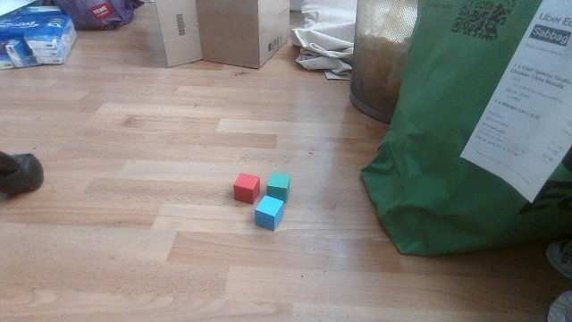

Computer vision foundations · Lesson 03
Visual features
Turn nearby pixel values into evidence: first with a small weighted filter, then with a toy color rule.
Your goal: decide which local color and edge evidence a cube detector can trust under changed lighting.
1. A feature is useful evidence
Imagine two photos of the same red cube: one in bright daylight, one in shadow. The red pixels change, but the cube's outline still creates a strong local transition. Before naming the pieces, ask: which nearby values change together, and which pattern could help a model find the cube?
A pixel is one small image sample. A feature is a representation that makes a pattern easier to use for a task. An edge is a strong change between neighboring pixel values. A filter reads a small neighborhood and produces a response number; its small grid of numbers is a kernel. Each kernel entry is a weight: it says how strongly one nearby pixel contributes and with which sign. These are pieces of evidence, not object identities.
2. The weighted-sum calculation
A weighted sum multiplies each input value by its corresponding weight and adds the products. The symbol × means multiply, and + means add. The symbol Σ means “add all matching positions.” For a patch P and kernel K, a simple response is R = Σ(P[i,j] × K[i,j]). The indices i and j name row and column positions; they are labels for positions, not extra measurements.
Worked example: take a 3 × 3 brightness patch whose left side is dark and right side is bright:
| patch P | 0 | 1 | 2 |
|---|---|---|---|
| 0 | 1 | 2 | |
| 0 | 1 | 2 | |
| kernel K | -1 | 0 | 1 |
| -1 | 0 | 1 | |
| -1 | 0 | 1 |
Each row contributes 0×(-1) + 1×0 + 2×1 = 2. Three rows give R = 2 + 2 + 2 = 6. A positive value means the bright side is on the kernel's positive side. Reverse the patch and the response becomes −6; make the patch flat and it becomes 0. The sign and size depend on the chosen weight convention.
When a filter slides, it moves the same kernel to a new neighborhood. The grid of responses is a feature map: it shows where that local pattern appears. In a learned model, training adjusts the kernel weights from examples; the weighted-sum arithmetic stays the same. This lesson uses “convolution” for that sliding operation, while keeping the toy orientation convention explicit.
Explore 1 · calculate a kernel response
Choose a toy patch. The kernel stays fixed at [−1, 0, +1] in each row. Predict the response sign before checking the arithmetic.
Predict → change → observe. A product is one matching multiplication, and a row sum adds the three products in one row. Change the patch above and observe how the sign of the response changes. This is a toy calculation, not a measurement of the trained detector.
Initial patch: each row contributes 2, so R = +6.
This is a hand-designed filter exercise. It is not an estimate of the trained project's internal kernels.
Worked answers: rise = +6, flat = 0, fall = −6. A sign change means the transition direction changed.
3. A color threshold is a rule, not understanding
A color channel is one numeric measurement per pixel for a component such as red, green, or blue. RGB means the three channels are ordered red, green, blue. A threshold is a cutoff used to accept or reject a value. A toy red rule might accept a pixel when its red value R is at least a threshold T, and red is larger than green G and blue B: R ≥ T and R > G and R > B. The symbol ≥ means “greater than or equal to.”
This rule can be a useful baseline, meaning a simple comparison method, or a diagnostic, meaning a check used to locate a problem. It can reveal that the camera sees a red surface very differently under a lamp. It does not know whether the red region is a cube, ball, chair, or sign. A false positive is an accepted region that is not a target; a false negative is a target rejected by the rule. Shape and context features are needed when color alone does not identify the class.
Explore 2 · test the toy color rule
Move the threshold and inspect three illustrative pixels. These RGB triplets are made-up teaching values, not camera measurements. The rule accepts only when all three conditions hold.
[210,45,35][150,50,40][190,175,170]At threshold 150, all three examples pass because red is the largest channel in each triplet. That includes a useful false positive: the pink-gray patch is not a cube even though the toy color rule accepts it. Raising the threshold can turn the shadowed example into a false negative.
4. From explicit filters to learned features
A hand-designed filter fixes its weights before seeing new images. A learned filter receives examples and desired outputs, then training adjusts its parameters, the numbers it is allowed to change. A learned response can still use a shortcut, such as a background that happens to occur with one class.
Invariance means preserving a useful answer when an irrelevant factor changes. A “red cube” feature should tolerate a modest brightness change if brightness is irrelevant, but should change when the cube becomes a red ball if shape matters. Robustness is a claim about conditions that must be measured.
5. Applied to our cubes
Current code: the learned detector receives color, edges, and shape evidence together. The repository also builds hard-negative crops: regions selected by the script as non-cube examples that contain tempting colors. Their correctness still depends on checking the actual crops. An empty label says that a crop contains no target object, so the training examples teach “blue” or “red” alone is insufficient.

for crop_name, bbox in HARDNEG_CROPS.items():
x1, y1, x2, y2 = bbox
crop = img.crop((x1, y1, x2, y2))
stem = f"crop_{img_path.stem}_{crop_name}"
dst_img = dst_img_dir / f"{stem}.jpg"
crop.save(dst_img, "JPEG", quality=92)
# Empty label = background-only training signal
(dst_lbl_dir / f"{stem}.txt").write_text("")Here x1, y1, x2, y2 mark the crop’s left, top, right, and bottom pixel coordinates. The build_jetrover_hardneg_crops function cuts each configured rectangle and writes an empty label file. Current code: finetune_hardneg.py sends those examples to the Ultralytics training library; it contains no hand-written color kernel or threshold. The kernel above is a learning exercise, not a training setting.
Proposed improvement: capture more distractors under new lighting and viewpoints, then reserve a fresh capture session for evaluation. That would test whether the learned model uses cube shape and context instead of memorizing one colored background. It is a next step, not an implemented change.
Trace this code: Why does write_text("") matter?
the empty file supplies background-only supervision; the crop still shows the color, but the target says “no cube.”
Read the project definition and the D2L convolution explanation for the broader context.
Final challenge · diagnose a new camera frame
A new frame contains a red cardboard package and a shadowed red cube. Your toy rule accepts the package at T = 150 but rejects the cube at T = 170. Choose the best first conclusion.
Worked reveal and rubric
The best first conclusion is that the threshold exposes two failure modes at once: the package is a false positive and the shadowed cube is a possible false negative. Keep the color rule as a diagnostic, then check shape/context features and collect a fresh capture under the changed lighting. A kernel response detects a local transition; it does not identify the object.
- 1 point: names the package false positive and shadowed-cube false negative.
- 1 point: separates color evidence from cube identity.
- 1 point: proposes fresh lighting/viewpoint examples before changing the rule.
Ask the teaching agent about any term that still feels vague.
Primary sources
- Dive into Deep Learning: Convolutions for Images — kernel arithmetic, feature maps, and learned filters.
- Szeliski, Computer Vision: Algorithms and Applications — filtering, edges, and image evidence.